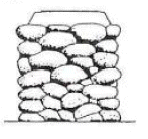
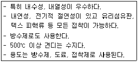
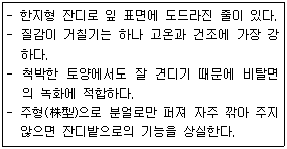
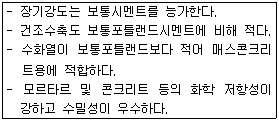
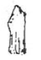
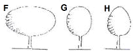
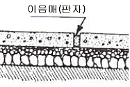

조경기능사 (2009-01-18 기출문제)
1과목: 조경일반
1. 주택정원의 대문에서 현관에 이르는 공간으로 명쾌하고 가장 밝은 공간이 되도록 조성해야 하는 곳은?
- 앞뜰
- 안뜰
- 뒷뜰
- 가운데 뜰
(정답률: 85%)

2. 동선 설계시 고려해야 할 사항으로 틀린 것은?
- 가급적 단순하고 명쾌해야 한다
- 성격이 다른 동선을 반드시 분리해야 한다.
- 가급적 동선의 교차를 피하도록 한다.
- 이용도가 높은 동선은 길게 해야 한다.
(정답률: 80%)
3. 다른 원리에 비해 생명감이 강하며 활기 있는 표정과 경쾌한 느낌을 주는 것은?
- 율동
- 통일
- 대칭
- 균형
(정답률: 90%)
4. 조경 실시설계 기술자의 주요 직무 내용으로 가장 적합한 것은?
- 물량 산출 및 시방서 작성
- 조경 시설물 및 자재의 생산
- 식재 공사 시공
- 전정 및 시비
(정답률: 73%)
5. 구조물의 외적 형태를 보여 주기 위한 다음 그림은 어떤 설계도인가?

- 평면도
- 투시도
- 입면도
- 조감도
(정답률: 75%)
6. 먼셀의 색상환에서 BG는 무슨 색인가?
- 연두
- 남색
- 청록
- 노랑
(정답률: 91%)
7. 색채나 형태 질감면에서 서로 달리하는 요소가 배열될 때의 아름다움은?
- 반복
- 조화
- 균형
- 대비
(정답률: 62%)
8. '자연은 직선을 싫어한다' 라고 주장한 영국의 낭만주의 조경가는?
- 브리지맨
- 캔트
- 챔버
- 렙톤
(정답률: 78%)
9. 일본의 정원양식이 아닌 것은?
- 다정식 정원
- 회화풍경식 정원
- 고산수식 정원
- 침전식 정원
(정답률: 80%)
10. 조선시대 정원과 관계가 없는 것은?
- 자연을 존중
- 자연을 인공적으로 처리
- 신선사상
- 계단식으로 처리한 후원 양식
(정답률: 79%)
11. 도시기본구상도의 표시기준 중 공업용지는 무슨 색으로 표현되는가?
- 노란색
- 파란색
- 빨간색
- 보라색
(정답률: 63%)
12. 도면과 시방서에 의하여 공사에 소요되는 자재의 수량, 시공면적, 체적 등의 공사량을 산출하는 과정을 무엇이라 하는가?
- 품셈
- 적산
- 견적
- 산정
(정답률: 64%)
13. 중국 정원 중 가장 오래된 수렵원은?
- 상림원(上林苑)
- 북해공원(北海公園)
- 원유(苑有)
- 승덕이궁(承德離宮)
(정답률: 80%)
14. 오픈 스페이스에 해당되지 않는 것은?
- 건폐지
- 공원묘지
- 광장
- 학교운동장
(정답률: 84%)
15. 스페인에 현존하는 이슬람정원 형태로 유명한 곳은?
- 베르사이유 궁전
- 보르비콩트
- 알함브라성
- 에스테장
(정답률: 78%)
2과목: 조경재료
16. 다음 보기가 설명하는 합성수지의 종류는?

- 실리콘수지
- 멜라민수지
- 푸란수지
- 에폭시수지
(정답률: 76%)
17. 일반적으로 홍색 계통의 단풍을 감상하기 위한 수종으로 가장 적당한 것은?
- 붉나무
- 벽오동
- 미루나무
- 은행나무
(정답률: 86%)
18. 다음 중 자연석에 해당되는 것은?
- 태호석
- 장대석
- 견치돌
- 마름돌
(정답률: 84%)
19. 원광석인 보크사이트에서 추출한 물질을 전기 분해해서 만드는 금속은?
- 니켈
- 비소
- 구리
- 알루미늄
(정답률: 60%)
20. 다음 보기의 설명으로 가장 적합한 잔디는?

- 톨 훼스큐
- 켄터키 블루그래스
- 버뮤다그래스
- 들잔디
(정답률: 48%)
21. 플라스틱 제품의 일반적 특성으로 틀린 것은?
- 내산성이 크다.
- 접착력이 작고 내열성이 크다.
- 가벼우며 경도와 탄력성이 크다.
- 내알칼리성이 크다.
(정답률: 73%)
22. 목재의 구조에 대한 설명으로 틀린 것은?
- 춘재는 빛깔이 엷고 재질이 연하다.
- 춘재와 추재의 두 부분을 합친 것을 나이테라 한다.
- 목재의 수심 가까이에 위치하고 있는 진한색 부분을 변재라 한다.
- 생장이 느린 수목이나 추운 지방에서 자란 수목은 나이테가 좁고 치밀하다.
(정답률: 77%)
23. 음지에서 견디는 힘이 강한 수목으로만 짝지어 진 것은?
- 소나무, 향나무
- 회양목, 눈주목
- 태산목, 가중나무
- 자작나무, 느티나무
(정답률: 75%)
24. 수분 요구도가 낮아 건조지에 가장 잘 견디는 수목은?
- 낙우송
- 물푸레나무
- 대추나무
- 가중나무
(정답률: 70%)
25. 목재의 특징 중 단점에 해당하는 것은?
- 가볍고 운반이 용이하다.
- 무게에 비해 강도가 높다.
- 가공성과 시공성이 용이하다.
- 가연성이므로 불에 타기 쉽다.
(정답률: 84%)
26. 염분의 해에 가장 적은 수종은?
- 곰솔
- 소나무, 향나무
- 목련
- 단풍나무
(정답률: 84%)
27. 방부제의 종류 중 방부력이 우수한 흑갈색 용액으로 외부의 기둥, 토대 등에 사용되지만 가격이 비싼 것이 단점인 방부제는?
- 크레오소트유
- 카세인
- 콜타르
- PCP(penta chloro phenol)
(정답률: 61%)
28. 가을에 그윽한 향기를 가진 등황색 꽃이 피는 나무는?
- 수수꽃다리
- 금목서
- 배롱나무
- 매화나무
(정답률: 85%)
29. 봄(5월경)에 꽃이 백색으로 피는 수종은?
- 산수유
- 산사나무
- 팔손이나무
- 능소화
(정답률: 63%)
30. 가설공사 중 시멘트 창고 필요면적 산출시에 최대로 쌓을 수 있는 시멘트 포대 기준은?
- 9포대
- 11포대
- 13포대
- 15포대
(정답률: 86%)
31. 암석을 구정하고 있는 조암광물의 집합상태에 따라 생기는 모양을 무엇이라고 하는가?
- 절리
- 층리
- 석목
- 석리
(정답률: 56%)
32. 일반 벽돌쌓기시 사용되는 우리나라의 표준형 벽돌의 규격은? (단, 단위는 mm 이다.)
- 190×90×57
- 200×90×57
- 200×0×60
- 210×100×60
(정답률: 89%)
33. 침엽수로만 짝지어진 것이 아닌 것은?(오류 신고가 접수된 문제입니다. 반드시 정답과 해설을 확인하시기 바랍니다.)
- 향나무, 주목
- 낙우송, 잣나무
- 가시나무, 구실잣밤나무
- 편백, 낙엽송
(정답률: 62%)
34. 다음 보기의 설명에 적합한 시멘트는?

- 플라이애시 시멘트
- 조강 포틀랜드 시멘트
- 내황산염 포틀랜드 시멘트
- 알루미나 시멘트
(정답률: 51%)
35. 자연석은 돌 모양에 따라 8가지의 형태로 분류하는데 그 중 '입석'을 나타낸 것은?

(정답률: 91%)
3과목: 조경 시공 및 관리
36. 잔디밭 1평(3.3 ㎡)에 규격 30cm × 30cm 의 잔디를 전면 붙이기로 심고자 한다. 약 몇 장의 잔디가 필요한다?
- 약 11장
- 약 24장
- 약 30장
- 약 37장
(정답률: 51%)
37. 도시공원 및 녹지 등에 관한 법규에 의한 어린이공원의 설계기준으로 부적합한 것은?
- 유치거리는 250m 이하
- 규모는 1500m2 이상
- 공원시설 부지면적은 60% 이하
- 건물면적은 10% 이하
(정답률: 71%)
38. 골프 코스 설계시 골프장의 표준 코스는 몇 개의 홀로 구성하는가?
- 9
- 18
- 32
- 36
(정답률: 86%)
39. 다음 잔디의 종류 중 잔디 깎기에 가장 약한 것은?
- 버뮤다 그래스
- 벤트 그래스
- 금잔디
- 켄터키 블루그래스
(정답률: 42%)
40. 소나무의 순따기(摘芯)에 관한 설명 중 틀린 것은?
- 해마다 4 ~ 6월경 새순이 6 ~ 9cm 자라난 무렵에 실시 한다.
- 손 끝으로 따주어야 하고, 가을까지 끝내면 된다.
- 노목이나 약해 보이는 나무는 다소 빨리 실시한다.
- 상장생장(上長生長)을 정지시키고, 곁눈의 발육을 촉진시킴으로써 새로 자라나는 가지의 배치를 고르게 한다.
(정답률: 69%)
41. 외부공간 중 통행자가 많은 원로가 광장의 경우 몇 이상의 최저 조도(Lux)를 유지해야 하는가?(오류 신고가 접수된 문제입니다. 반드시 정답과 해설을 확인하시기 바랍니다.)
- 0.5
- 1.5
- 3.0
- 6.0
(정답률: 53%)
42. 농약 취급시 주의할 사항으로 부적합한 것은?
- 농약을 살포할 때는 방독면과 방호용 옷을 착용하여야 한다.
- 쓰고 남은 농약은 변질 될 수 있으므로 즉시 주변에 버리거나 다른 용기에 담아둔다.
- 피로하거나 건강이 나쁠 때는 작업하지 않는다.
- 작업 중에 식사 또는 흡연을 금한다.
(정답률: 91%)
43. 일반적으로 계단을 설계할 때 계단의 축장(蹴上)높이가 12cm일 때 답면(踏面)의 너비(츠)로 가장 적합한 것은?
- 20 ~ 25
- 26 ~ 31
- 31 ~ 36
- 36 ~ 41
(정답률: 49%)
44. 소나무 이식 후 줄기에 새끼를 감고 진흙을 바르는 가장 주된 목적은?
- 건조로 말라 죽는 것을 막기 위하여
- 줄기가 햇빛에 타는 것을 막기 위하여
- 추위에 얼어 죽는 것을 막기 위하여
- 소나무 좀의 피해를 예방하기 위하여
(정답률: 67%)
45. 여름철 모래터 위에 강한 햇빛을 차단하여 그늘을 만들기 위해 식재하는 녹음용수로 가장 적합한 수종은?
- 버즘나무
- 잣나무
- 후피향나무
- 수양버들
(정답률: 74%)
46. 일반적으로 관목성 수목의 규격표시 방법으로 가장 적합한 것은?
- 수고 × 흉고 직경
- 수고 × 수관 폭
- 간장 × 근원 직경
- 근장 × 근원 직경
(정답률: 77%)
47. 조경수는 수관 본위(本位)의 수형(樹形)에 따라 크게 정형과 부정형으로 구분하고, 거기서 정형은 직선형과 곡선형으로 구본된다. 다음 곡선형 중 타원형(楕圓形) 'G'의 형태를 갖는 수종은?

- 미루나무
- 층층나무
- 박태기나무
- 히말라야시다
(정답률: 53%)
48. 수목 줄기의 썩은 부분을 도려내고 구멍에 충진수술을 하고자 할 때 가장 효과적인 시기는?
- 1 ~ 3 월
- 4 ~ 6 월
- 10 ~ 12 월
- 시기는 상관없다.
(정답률: 73%)
49. 축척 1/50 도면에서 도상(圖上)에 가로 6cm, 세로 8cm 길이로 표시된 연못의 실제 면적(m2)은?
- 12
- 24
- 36
- 48
(정답률: 53%)
50. 관리업무의 수행 중 직영방식의 장점이 아닌 것은?
- 관리책임이나 책임소재가 명확하다.
- 긴급한 대응이 가능하다.
- 이용자에게 양질의 서비스가 가능하다.
- 전문가를 합리적으로 이용할 수 있다.
(정답률: 72%)
51. 자연상태의 흙은 파내면 공극으로 인하여 그 부피가 늘어나게 되는데 가장 크게 부피가 늘어나는 것은?
- 모래
- 진흙
- 보통흙
- 암석
(정답률: 78%)
52. 계약된 기간내에 모든 공사를 가장 합리적이고 경제적으로 마칠 수 있도록 공사의 순서를 정하고 단위공사에 대한 일정을 계획하는 것은?
- 현장인원 편성
- 공정계획
- 자재계획
- 노무계획
(정답률: 88%)
53. 목재의 일반적인 성질에 대한 설명으로 틀린 것은?
- 섬유포화점 이하에서는 함수율리 낮을수록 강도가 크다.
- 비중이 높을수록 강도가 크다.
- 열전도율은 콘크리트, 석재 등에 비하여 낮다.
- 목재의 강도 크기 순서는 섬유방향에 평행한 강도가 그 직각 방향보다 작다.
(정답률: 58%)
54. 옥상정원 인공지반 상단의 식재 토양층 조성시 경량재로 사용하기 가장 부적당한 것은?
- 버미큘라이트(Vermiculite)
- 펄라이트(Perlite)
- 피트(Peat)
- 석회
(정답률: 83%)
55. 거름을 줄 때 윤상거름 주기를 실시할 경우, 수관폭을 형성하는 가지 끝 아래의 수관선을 기준으로 하여, 환상으로 깊이는 20 ~ 25cm 로 하고, 나비는 어느 정도로 해야 하는가?
- 10 ~ 15 ㎝
- 20 ~ 30 ㎝
- 40 ~ 50 ㎝
- 50 ㎝ 이상
(정답률: 62%)
56. 내구성과 내마멸성이 좋으나, 일단 파손된 곳은 보수가 어려우므로 시공 때 각별한 주의가 필요하다. 다음 그림과 같은 원로 포장 방법은?

- 마사토 포장
- 콘크리트 포장
- 판석 포장
- 벽돌 포장
(정답률: 85%)
57. 우리나라 들잔디에 가장 많이 발생하는 병으로 엽맥에 불규칙한 적갈색의 반점이 보이기 시작할 때 즉 5 ~ 6월, 9월 중순 ~ 10월 하순에 발견 할 수 있는 것은?
- 붉은 녹병
- 후자리움 팻취
- 브라운 팻취
- 스노우 몰드
(정답률: 85%)
58. 도시공원 및 녹지 등에 관한 법규상 유치거리가 500m 이하의 근린생활권근린공원 1개소의 유치 규모 기준은?
- 1500㎡ 이상
- 5000㎡ 이상
- 10000㎡ 이상
- 30000㎡ 이상
(정답률: 72%)
59. 견치석 쌓기를 설명한 것 중 틀린 것은?
- 지반이 약한 곳에 석축을 쌓아 올려야 할 때는 잡석이나 콘크리트로 튼튼한 기초를 만들어 놓은 후 하나씩 주의 깊게 쌓아 올린다.
- 경사도가 1:1보다 완만한 경우를 돌붙임이라 하고 경사도가 1:1보다 급한 경우를 돌쌓기라고 한다.
- 쌓아 올리고자 하는 높이가 높을 때는 이음매가 수평선을 그리도록 쌓아 올린다.
- 쌓아 올리고자 하는 높이가 높을 때는 군데군데 물 빠짐 구멍을 뚫어 놓는다.
(정답률: 54%)
60. 무궁화나 꽃사과에 많이 발생되는 진딧물의 구제 농약으로 가장 효과가 좋은 것은?
- 테트라디폰유제(테디온)
- 트라아조포스유제(호스타치온)
- 테메톤-에스-메일유제(메타시스톡스)
- 페노티오카브유제(우수수)
(정답률: 62%)